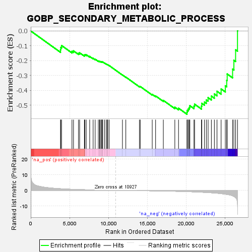
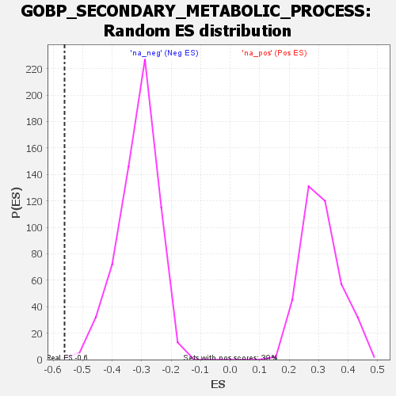

| | | Dataset | wbh_treatment_res_for_gsea |
| Phenotype | NoPhenotypeAvailable |
| Upregulated in class | na_neg |
| GeneSet | GOBP_SECONDARY_METABOLIC_PROCESS |
| Enrichment Score (ES) | -0.56175077 |
| Normalized Enrichment Score (NES) | -1.7906845 |
| Nominal p-value | 0.0016366612 |
| FDR q-value | 0.16058737 |
| FWER p-Value | 0.797 |
Table: GSEA Results Summary

Fig 1: Enrichment plot: GOBP_SECONDARY_METABOLIC_PROCESS
Profile of the Running ES Score & Positions of GeneSet Members on the Rank Ordered List
| SYMBOL | RANK IN GENE LIST | RANK METRIC SCORE | RUNNING ES | CORE ENRICHMENT | | 1 | MFSD12 | 3826 | 1.036 | -0.1268 | No |
| 2 | FMO1 | 3863 | 1.024 | -0.1109 | No |
| 3 | OPN3 | 3963 | 0.992 | -0.0980 | No |
| 4 | AKR1B10 | 5300 | 0.660 | -0.1373 | No |
| 5 | PMEL | 5498 | 0.624 | -0.1342 | No |
| 6 | DDC | 6137 | 0.506 | -0.1497 | No |
| 7 | CTNS | 6286 | 0.482 | -0.1472 | No |
| 8 | AKR7A2 | 6893 | 0.392 | -0.1635 | No |
| 9 | MC1R | 6961 | 0.380 | -0.1596 | No |
| 10 | AKR1C2 | 7131 | 0.358 | -0.1600 | No |
| 11 | N6AMT1 | 7579 | 0.302 | -0.1718 | No |
| 12 | SLC45A2 | 8020 | 0.249 | -0.1841 | No |
| 13 | CYP1B1 | 8283 | 0.222 | -0.1903 | No |
| 14 | TYRP1 | 8687 | 0.182 | -0.2024 | No |
| 15 | ARL1 | 8841 | 0.167 | -0.2054 | No |
| 16 | AKR1A1 | 8910 | 0.160 | -0.2053 | No |
| 17 | UGT1A7 | 9067 | 0.145 | -0.2087 | No |
| 18 | BCL2 | 9123 | 0.138 | -0.2085 | No |
| 19 | FMO2 | 9219 | 0.128 | -0.2099 | No |
| 20 | PON3 | 9255 | 0.124 | -0.2091 | No |
| 21 | CYP2D6 | 9498 | 0.108 | -0.2164 | No |
| 22 | APPL1 | 9713 | 0.087 | -0.2230 | No |
| 23 | TYR | 9840 | 0.080 | -0.2264 | No |
| 24 | DCT | 9904 | 0.075 | -0.2276 | No |
| 25 | CYP3A4 | 10076 | 0.060 | -0.2330 | No |
| 26 | ACMSD | 11788 | -0.064 | -0.2964 | No |
| 27 | DDT | 12222 | -0.096 | -0.3111 | No |
| 28 | CYP1A1 | 13974 | -0.186 | -0.3740 | No |
| 29 | SLC24A5 | 14081 | -0.197 | -0.3746 | No |
| 30 | AKR1C1 | 15618 | -0.310 | -0.4273 | No |
| 31 | CYP3A5 | 16050 | -0.340 | -0.4378 | No |
| 32 | WNT5A | 17045 | -0.426 | -0.4681 | No |
| 33 | PAM | 18523 | -0.589 | -0.5139 | No |
| 34 | AKR1C4 | 19000 | -0.653 | -0.5209 | No |
| 35 | UGT1A8 | 20086 | -0.821 | -0.5480 | Yes |
| 36 | RAPGEF2 | 20121 | -0.828 | -0.5353 | Yes |
| 37 | CBR4 | 20248 | -0.850 | -0.5258 | Yes |
| 38 | AKR1B1 | 20367 | -0.870 | -0.5157 | Yes |
| 39 | AKR7A3 | 20456 | -0.888 | -0.5041 | Yes |
| 40 | AS3MT | 20985 | -0.983 | -0.5074 | Yes |
| 41 | BDH2 | 21065 | -0.999 | -0.4937 | Yes |
| 42 | OCA2 | 21949 | -1.201 | -0.5068 | Yes |
| 43 | ZEB2 | 21990 | -1.211 | -0.4879 | Yes |
| 44 | NFE2L2 | 22332 | -1.299 | -0.4790 | Yes |
| 45 | TRPC1 | 22574 | -1.367 | -0.4651 | Yes |
| 46 | CITED1 | 22802 | -1.432 | -0.4496 | Yes |
| 47 | CYP2A6 | 23221 | -1.565 | -0.4391 | Yes |
| 48 | GIPC1 | 23607 | -1.707 | -0.4249 | Yes |
| 49 | CYP2A7 | 23945 | -1.848 | -0.4066 | Yes |
| 50 | SULT1C4 | 24473 | -2.123 | -0.3908 | Yes |
| 51 | ATP7A | 25014 | -2.473 | -0.3696 | Yes |
| 52 | CDH3 | 25193 | -2.613 | -0.3325 | Yes |
| 53 | ASIP | 25254 | -2.656 | -0.2901 | Yes |
| 54 | CYP1A2 | 25948 | -3.519 | -0.2572 | Yes |
| 55 | SLC7A11 | 26116 | -3.918 | -0.1977 | Yes |
| 56 | RAB38 | 26335 | -4.680 | -0.1273 | Yes |
| 57 | AKR1C3 | 26579 | -8.167 | 0.0006 | Yes |
Table: GSEA details [plain text format]

Fig 2: GOBP_SECONDARY_METABOLIC_PROCESS: Random ES distribution
Gene set null distribution of ES for GOBP_SECONDARY_METABOLIC_PROCESS